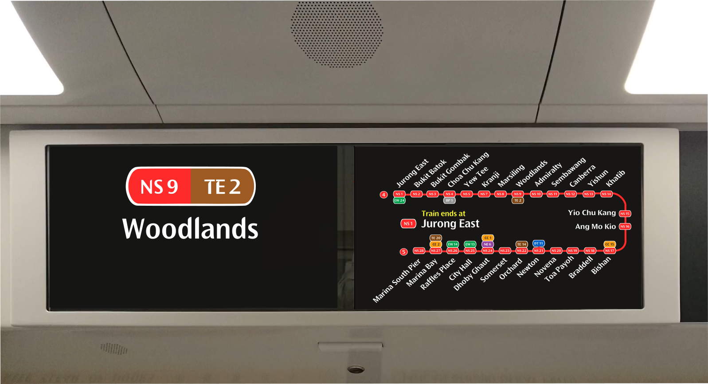

My redesigns are not radical.
People often design their own concepts based on how they want it to look like, rather than how it should look like. My redesigns are not about changing the entire design of the Wayfinding System, but rather improving on the existing design to make it more user-friendly and accessible to all users. I do not believe in creating another Design System, when the current ones are barely a decades old.
Honestly, each designs and UIs you see in real-life are not entirely bad. So in this section, I'll bring you through my thought process in redesigning these elements.
Bus Card Reader UI (LTA)
The current Bus Card Readers are getting old. Hence, the UI will need a refresh as well! Had a quick look at the upcoming Card Readers that are being trialled on selected buses, and I feel the UI is good! I have decided to make a guess on how the UI could look like, and also incorporated some elemnts from the current Design System.
{kind=link}
{kind=link}
{kind=link}
{kind=link}
{kind=link}
{kind=link}
STARiS 2 (SMRT)
The current STARiS 2's UI is about 16 years old, and it recently got a minor upgrade, though only for the Next Stop and Station Name Screens. A major redesign is needed to align with the current design used on the R151s, but at the same time I wanted to retain some elements from the current STARiS UI.

Revamped STARiS 2.0 UI - Updated Line Diagram Layout and New Next Station Interface
{kind=link}

Revamped STARiS 2.0 UI - Updated Station Name Interface
It's time for a makeover.
As mentioned, I wanted to retain some elements from the current STARiS UI, hence I kept the Line Diagram layout similar to the current one, modernized with a newer Doors Closing animation and also a simplified Arrival Screen.
{kind=link}
{kind=link}
Doors Closing Animation
The Door Closing Animations pays homage to the countdown, now presented in a different manner. The two blinking arrow replaces the numbered countdown, giving a more dynamic feel to it.
Original Doors Closing Animation - Left Screen
Original Doors Closing Animation - Right Screen
Revamped Doors Closing Animation - Left Screen
Revamped Doors Closing Animation - Right Screen
Arrival Animation
Revamped Arrival Animation Example 1 - Jurong East [A]
Revamped Arrival Animation Example 2 - Woodlands [A]
This section is being updated. Check back soon for more!